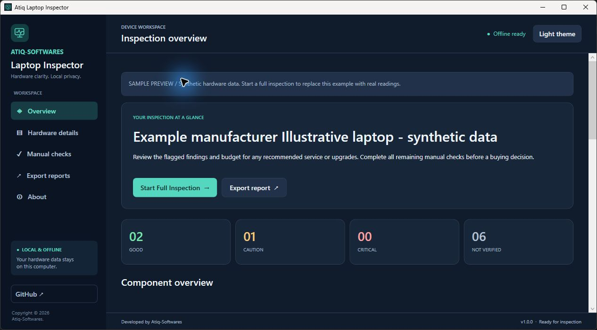
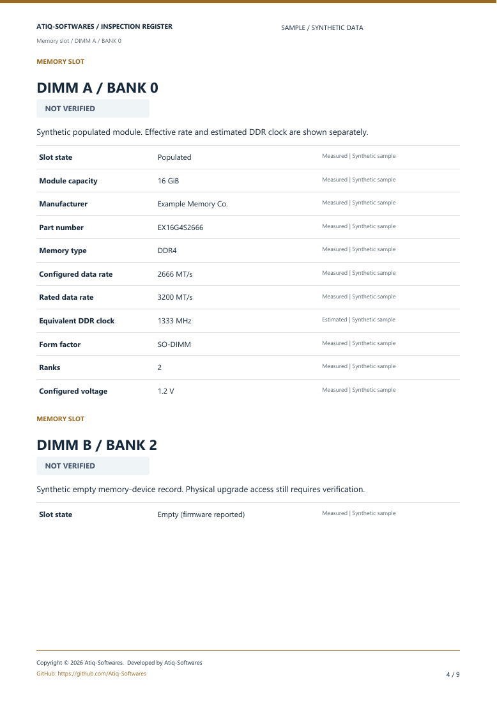
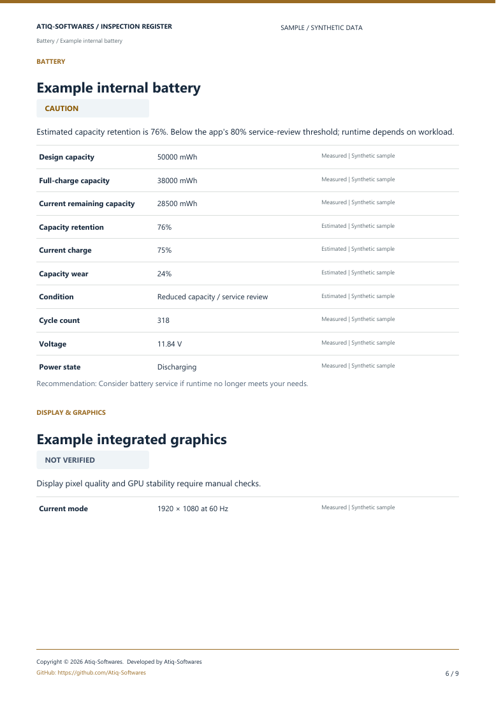
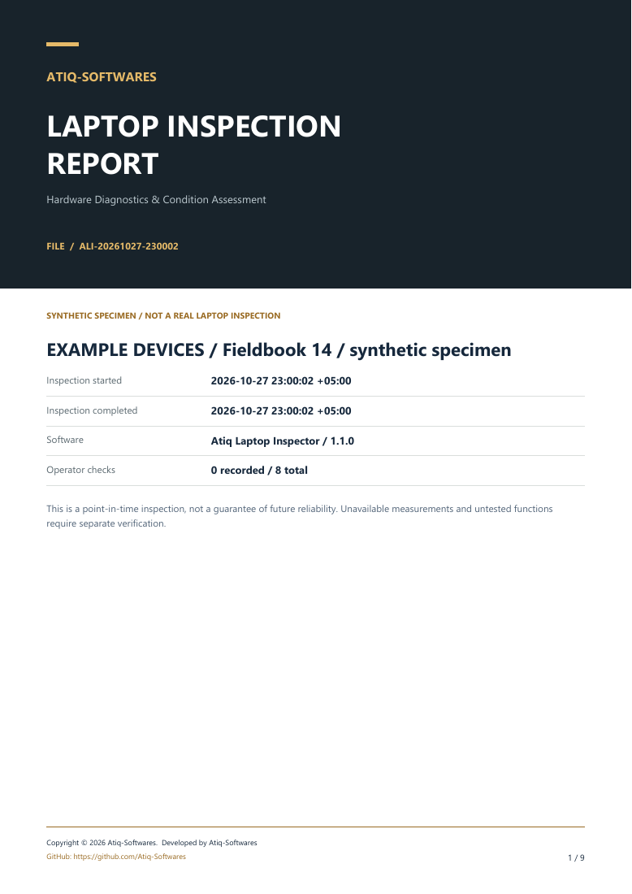

CPU & every memory slot
Processor, cores, clocks and cache. RAM capacity, module details, configured and rated transfer speeds, plus firmware-reported empty slots.
ATIQ LAPTOP INSPECTOR
See what’s inside, understand its condition, and take the details with you. A portable inspection desk for your Windows laptop.
Download Free for Windows Take a look inside
LOOK PAST THE STICKER
Checking a used laptop, planning an upgrade, or documenting your own? Start with the available facts.
Processor, cores, clocks and cache. RAM capacity, module details, configured and rated transfer speeds, plus firmware-reported empty slots.
Design and full-charge capacity, remaining charge, capacity retention and reported cycles. Charge level and battery condition stay separate.
SSD or HDD model, capacity, operating hours, temperature, wear and SMART status where the drive and controller expose them.
Graphics, BIOS, Windows and network inventory. Guided manual checks for the keyboard, display, audio, ports and physical condition.
NOT JUST A WALL OF SPECS
A clear explanation for the readings.
Reports that make the details readable.


The app screenshot and sample report pages contain labelled synthetic data, not measurements from your laptop. These previews originate from v1.1; the current security release is v1.1.1.

THE DETAILS, DOCUMENTED.TAKE THE EVIDENCE WITH YOU
Save the inspection for a buyer, a repair desk, or your own records. Read the findings alongside their sources and limitations.
Reports stay with you. The application does not upload your inspection.
FROM ZIP TO REPORT
Download → Extract → Run EXE → Scan → Get Report
Get the free Windows portable ZIP using the download button.
Extract all files into a normal local folder. Keep them together.
Open Atiq-Laptop-Inspector.exe from the extracted folder.
Choose Start Full Inspection. Review readings and manual checks.
Open Export reports and save PDF, HTML or JSON.
A FEW USEFUL ANSWERS
Yes. The application is free for everyone. After downloading, it needs no internet connection, account, registration, payment, subscription, licence key or activation server.
The portable package targets Windows 10/11 x64. It includes the required .NET runtime, so there is no separate runtime installation. Current validation covers Windows 11; Windows 10 and every hardware model have not been individually qualified. Use a Windows version receiving appropriate security updates.
No. Available data depends on the firmware, Windows providers, drive and controller. Unsupported values remain unavailable. CPU inventory is not a benchmark, RAM capacity is not a memory integrity test, and battery capacity does not establish physical safety.
Normal inspection does not require an administrator account. Some restricted drive readings have an optional, explained advanced-access flow that requests Windows permission.
The current EXE is unsigned, so Windows or your organization may warn or block it. Download only from the official release, check its SHA-256, and follow your organization’s policy. Do not disable protection or bypass a block. A matching checksum checks file integrity; it is not a verified publisher signature.
SMALL DOWNLOAD. CLEARER PICTURE.
One portable Windows app. Your inspection, on your terms.
100% Free • Offline • No Installation • No Registration